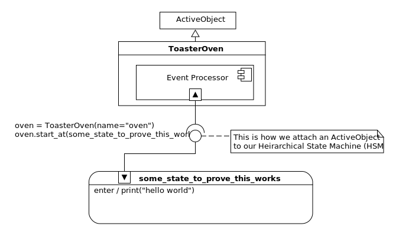
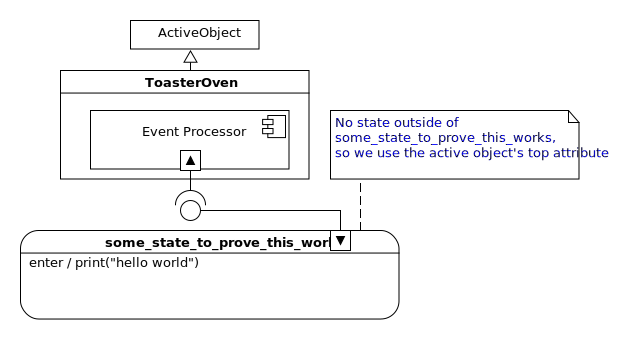

To make this toaster oven statechart example seem like a real software project,
I will break it’s design process up into 6 steps, or iterations.
Each iteration will have a specification, a design diagram and the code needed
to match the design diagram. Then I will prove that the code works and I’ll
provide links to a bunch of questions and answers about the code.
You can use these links to choose the questions you want to see the answers to,
or just skip onto the next iteration.
Each iteration will be heavily linked so that you can quickly bounce around in
its documentation.
Iteration 1: setup
In this iteration I will talk about setting up our development environment. We
will built a very simple statechart example and confirm that it is working.
spec,
design,
code,
proof,
questions,
next
Iteration 1 specification:
- Ensure our Python version is 3.5 or greater (miros needs this to work)
- Install miros
- Import the required statechart components
- Build a ToasterOven class which inherits from an ActiveObject
- Make a single state, and start the statechart in that state
- Add instrumentation to our state
- Use the instrumentation to confirm that the statechart is working.
spec,
design,
code,
proof,
questions,
next
To confirm that Python is version 3.5 or greater, in your terminal type:
To install miros, use pip (included in Python 3.5 or greater), in your terminal
type:
python3 -m venv
. ./venv/bin/activate
pip install miros
Note
Miros is not dependent on any other packages.
Here is the design we will use to confirm that miros is working on your computer:

spec,
design,
code,
proof,
questions,
next
Here is the code:
# file named toaster_oven_1.py
from miros import ActiveObject
from miros import return_status
from miros import Event
from miros import signals
from miros import spy_on
import time
class ToasterOven(ActiveObject):
def __init__(self, name):
super().__init__(name)
@spy_on
def some_state_to_prove_this_works(oven, e):
status = return_status.UNHANDLED
if(e.signal == signals.ENTRY_SIGNAL):
print("hello world")
status = return_status.HANDLED
else:
oven.temp.fun = oven.top
status = return_status.SUPER
return status
if __name__ == "__main__":
oven = ToasterOven(name="oven")
oven.live_trace = True
oven.start_at(some_state_to_prove_this_works)
time.sleep(0.1)
,
design,
code,
proof,
questions,
next
Now to prove that the code works, in your terminal, run the program:
python3 toaster_oven_1.py
hello world
[2018-09-11 09:35:10.011526] [oven] \
e->start_at() top->some_state_to_prove_this_works
,
design,
code,
proof,
questions,
next
Questions and Answers about the code and the results:
spec,
design,
code,
proof,
questions,
next
Why is miros only supported in Python 3.5 or greater?
I originally wrote and tested miros in Python 3.5. I didn’t know it at the
time, but I used the Python 3.5 feature of avoiding circular imports. When I
tried to run miros in 3.4 I got a lot of ImportErrors. So there you go, it was
an accidental limitation.
spec,
design,
code,
proof,
questions,
next
Can you explain what is going on with the imports on lines 1-6?
I’ll answer this question by putting a lot of comments into the code:
# ActiveObject contains the thread, event processor, and queues
# it also contains the miros API
from miros import ActiveObject
# return_status contains information on how a state callback
# should respond when called by the event processor
from miros import return_status
# Event is the miros Event class, use this to make a new event object
from miros import Event
# signals, contains all of the signal names in the system
# it also automatically constructs new signals names if it
# is used with a name that hasn't been used before:
# example:
# e = Event(signal=signals.NEW_NAME)
from miros import signals
# spy_on is a decorator which when applied to state callback
# function will let use used the spy and trace instrumentation
# on that callback
from miros import spy_on
# time is imported so that the program can be delayed
import time
,
design,
code,
proof,
questions,
next
Why bother making a ToasterOven that inherits from the ActiveObect, why not just use the ActiveObject?
We will put toaster oven attributes and worker functions into the toaster oven
class later. For instance, we could put a light_on method in the
ToasterOven class. The first argument given to any state callback function by
the event processor will be a reference to a ToasterOven object. Now suppose
this first argument was called oven, any state callback function could turn
on the light with: oven.light_on()
spec,
design,
code,
proof,
questions,
next
You keep calling the state functions callbacks, what do you mean by this?
A callback function is just a function that is given to another function, so
that it can be called later:
import time
# this will be our callback
def print_msg(message):
print(message)
def call_something_later(callback):
time.sleep(1)
callback("hello world")
# wait one second then print "hello world"
call_something_later(print_msg)
The states in our diagram are constructed as callback functions with a given
signature. The event processor will call these functions when it needs to.
spec,
design,
code,
proof,
questions,
next
What do you mean by a function signature?
A function signature describes the arguments that a function can take and the
type of items it can return.
Our state callback functions will always have the same signature:
# The event processor will call this function when it needs to
# because the function isn't called right away,
# it is called a callback function
# 1st part of the function signature, it's arguments.
# Our state callback functions will always take two arguments:
# 1) a reference to a state_chart_object
# 2) an event
def some_state_function(state_chart_object, e):
status = return_status.UNHANDLED
# do useful work, then
# set the status variable to an attribute of return_status
# to tell the event processor how your function responded
# to its call
# 2nd part of the function signature: it will always return
# an attribute of the return_status object
return status
For a real state function, it’s signature would be expressed like this:
| def some_state_to_prove_this_works(oven, e):
status = return_status.UNHANDLED
if(e.signal == signals.ENTRY_SIGNAL):
print("hello world")
status = return_status.HANDLED
else:
oven.temp.fun = oven.top
status = return_status.SUPER
return status
|
To make our state callback function have the right signature, we ensure that it
takes two arguments, a statechart object and an event, line 1. Then, depending
on how the function reacts, we either return:
return_status.UNHANDLED if we want an event to bubble outward in the
chart. Typically this is the default value of the item you will return from
a statechart callback. See line 2.return_status.HANDLED when we want the event processor to stop searching
for an event. See line 3.return_status.SUPER when we don’t know what to do to the event, so we
return information that will tell the event processor to try our super state. See line 8.
There are more things that can be returned, we will address them as the example continues.
spec,
design,
code,
proof,
questions,
next
This seems strange to me, I haven’t seen Python that looks like this before. Why do it this way?
The miros library is intended to serve two different audiences:
- Embedded programmers who need to quickly prototype their designs, then port
the work to c/C++ using the QP framework.
- Python developers who want to use statecharts.
This way of writing statecharts – by using callbacks with if-elif structures,
working with an ActiveObject – will make code that is extremely easy to port
back to the QP framework.
If you would like to program in a more “Pythonic” way, you can inherit from the
miros Factory class instead of the ActiveObject. Under the hood, the Factory
class is just making the kinds of callback functions we are talking about here.
It is easier to explain this library using the traditional techniques of engaging
with the Miros Samek event processing algorithm than by just jumping into the
Factory class.
spec,
design,
code,
proof,
questions,
next
How am I going to remember to structure my callback functions with all of these rules?
Once you do it a few times you will remember it. To begin with just reference
the boiler plate example, and change it
to match your design.
Also, it is relatively easy to add this boiler plate code to whatever snippet
technology you are using with your editor. I use Ultisnips in Vim.
spec,
design,
code,
proof,
questions,
next
Where is the thread, event processor and queues in the diagram?
The thread is missing from the UML:
Unlike the thread the event processor is shown on the picture, though this is
probably invalid UML:
I leave the event processor on my pictures so I can show the starting state of
the active object.
The queues are missing from the UML as well:
spec,
design,
code,
proof,
questions,
next
Can you explain what the spy_on decorator is doing?
The spy_on decorator wraps a state’s callback function with some code that lets
you log the output of the event processor as it follows its rules, making T
and S move around the HSM.
from miros import spy_on
@spy_on
def some_state_to_prove_this_works(oven, e):
status = return_status.UNHANDLED
if(e.signal == signals.ENTRY_SIGNAL):
print("hello world")
status = return_status.HANDLED
else:
oven.temp.fun = oven.top
status = return_status.SUPER
return status
By using the decorator you can debug, test and document the behavior of your
statechart.
If you don’t include the decorator, the statechart will work a little bit
faster, but it will be harder to debug.
Note
The spy_on decorator needs to be placed on every callback that you want to
monitor. I usually place the spy_on decorator on all of the state callbacks.
spec,
design,
code,
proof,
questions,
next
Can you explain what is happening in the entry clause?
When the event processor sends an event with the signal name ENTRY_SIGNAL
the if clause of the state callback will print “hello world” to the terminal
then it will set the status variable to return_status.HANDLED. This status value
is returned to the event processor, letting it know to stop processing the
ENTRY_SIGNAL event.
def some_state_to_prove_this_works(oven, e):
status = return_status.UNHANDLED
if(e.signal == signals.ENTRY_SIGNAL):
print("hello world")
status = return_status.HANDLED
else:
oven.temp.fun = oven.top
status = return_status.SUPER
return status
The entry signal is sent to the callback as a result of the HSM being started in
the some_state_to_prove_this_works state.
spec,
design,
code,
proof,
questions,
next
Can you explain where the init and exit clauses are?
We don’t need the init and exit clauses in the design, so we don’t include them
in the if-elif structure of the state’s callback function. The event processor
will still call the function with the event named INIT_SIGNAL, after it has
entered the some_state_to_prove_this_works state, but it will be ignored.
By only including the events that we need we keep our callback function small
and easy to read.
spec,
design,
code,
proof,
questions,
next
Can you explain what is going on with the else clause?
The else clause is used by T to know how to search outward in a statechart.
def some_state_to_prove_this_works(oven, e):
status = return_status.UNHANDLED
if(e.signal == signals.ENTRY_SIGNAL):
print("hello world")
status = return_status.HANDLED
else:
oven.temp.fun = oven.top # no outer state
status = return_status.SUPER
return status
The callback functions report where they are in the HSM’s hierarchy by setting
the temp.fun of their active object. They set this value to point to their
super state, or the state that is outside their current state in the diagram.
In this case, the some_state_to_prove_this_works state doesn’t have an outer
state, so we set the oven.temp.fun attribute to oven.top, to let the event
processor know it has reached the outermost state of the HSM.

The returned value of the state callback function is set to
return_status.SUPER so that your function can notify the event processor
that it set the oven.temp.fun to its superstate’s function.
There are many different reasons the event processor might want to trigger the
else clause in your callback function. It could call the state callback with a
reserved event, which it knows will not be in the if-elif structure – it does
this when it is trying to discover the hierarchy of your HSM. It could also use
the else clause to make T bubble out of the current state, when that state
doesn’t know what to do with a user defined event. This is the power of an HSM.
More will be said about this in the up coming iterations.
Note
How the else clause is called doesn’t really matter to you as an application
developer. You just have to follow some rules:
- set the
oven.temp.fun to the callback function representing the
superstate
- if there is no superstate, set it to the
top attribute of the first
argument given to the callback
- ensure that the callback function returns, return_state.SUPER if the else
clause is reached.
spec,
design,
code,
proof,
questions,
next
How does the live_trace call work?
The live_trace attribute needs to be set before the
statechart’s thread is started:
if __name__ == "__main__":
oven = ToasterOven(name="oven")
oven.live_trace = True
oven.start_at(some_state_to_prove_this_works)
time.sleep(0.1)
It output’s the trace log as your statechart is reacting to events. It can only
work if the spy_on decorator is placed above the state functions in your HSM.
There are two different types of instrumentation output provided by miros. The
trace and the spy. The trace provides information only if a state
transition has occurred. It reports is S has moved. For each line in a
trace log, describes:
- The time stamp of when the event was reacted to
- The name of the statechart
- The event that caused the transition
- The starting state of S
- The ending state of S
Our minimal example doesn’t do much, it starts from outside of the HSM and then
transitions into the some_state_to_prove_this_works.
[2018-09-11 09:35:10] [oven] e->start_at() top->some_state_to_prove_this_works
In this example we see: when I ran the test. That the statechart is called oven,
that the starting state of S in this oven instance was top and the
ending state of S was some_state_to_prove_this_works.
There is no start_at event in miros. But to keep the trace output useful
for the person looking at it, I pretend that at a start_at event causes the
initial transition into the HSM. On the diagram, this will be where the event
processor attachment point touches the HSM.
Note
I might remove some information from the timestamp in this documenation to make
the text fit on the screen.
spec,
design,
code,
proof,
questions,
next
What happens when the start_at method is called?
The start_at method links the oven object to the HSM, then it starts the
statechart. It does this by creating a new thread, then running the oven’s
event processor in that thread.
if __name__ == "__main__":
oven = ToasterOven(name="oven")
oven.live_trace = True
oven.start_at(some_state_to_prove_this_works)
time.sleep(0.1)
Before a statechart is started, T and S exist outside of the outermost
state. The start_at call, places T into the
some_state_to_prove_this_works. S marches towards T triggering as
many needed entry events as required, then the init event in the state that
T is in.
In our example there isn’t much to talk about. The entry clause of the
some_state_function is called, printing “hello world”.
spec,
design,
code,
proof,
questions,
next
Why are you placing a delay at the end of the code sample?
When you call the start_at method of the oven statechart, it starts a new
thread. Then it runs the oven’s event processor in that thread. The main
program runs in the main thread.
if __name__ == "__main__":
oven = ToasterOven(name="oven")
oven.live_trace = True
oven.start_at(some_state_to_prove_this_works)
time.sleep(0.1)
The delay is placed at the bottom of the file to ensure that the statechart’s
thread can react, and produce some live trace feedback, before the main thread
exits the program.
Note
The miros package uses daemonic threads, which means that they will be shut
down with the main thread stops running.
spec,
design,
code,
proof,
questions,
next
How did your prove that your code worked?
Looking at the design, we see that the starting state should be
some_state_to_prove_this_works and that when it enters this state it should
print “hello world” to the terminal.
The output is:
hello world
[2018-09-11 09:35:10.011526] [oven] \
e->start_at() top->some_state_to_prove_this_works
Which is exactly what were were expecting.
spec,
design,
code,
proof,
questions,
next
Why are you using threads and not asyncio?
Asyncio is cool, but it doesn’t work with everything yet. It may be the future
of Python, but to use it all of your libraries will have to be asyncio
compliant. I wrote miros so that it can use as much existing Python as possible.
If you want to check out another implementation of the Miro Samek event
processing algorithm in Python, written with asyncio, check out Dean Hall’s pq.
When is it going to be done?
I’m not answering this question
spec,
design,
code,
proof,
questions,
next
Iteration 2: basic oven
Now that we know miros will run on our system, lets use it to build a very basic
toaster oven.
spec,
design,
code,
proof,
questions,
next
Iteration 2 specification:
- The toaster oven will have a door, it will always be closed
- The toaster oven will have an oven light, which can be turned off and on
- The toaster oven will have a heater, which can be turned off and on
- It will have two different heating modes, baking which can bake a potato
and toasting which can toast some bread.
- The toaster oven should start in the off state
- The toaster can only heat when the door is closed.
- The toaster’s light should be off when the door is closed.
spec,
design,
code,
proof,
questions,
next
spec,
design,
code,
proof,
questions,
next
# file named toaster_oven_2.py
from miros import ActiveObject
from miros import return_status
from miros import Event
from miros import signals
from miros import spy_on
import time
class ToasterOven(ActiveObject):
def __init__(self, name):
super().__init__(name)
def light_on(self):
print("light_on")
def light_off(self):
print("light_on")
def heater_on(self):
print("heater_on")
def heater_off(self):
print("heater_off")
@spy_on
def door_closed(oven, e):
status = return_status.UNHANDLED
if(e.signal == signals.ENTRY_SIGNAL):
oven.light_off()
status = return_status.HANDLED
elif(e.signal == signals.Baking):
status = oven.trans(baking)
elif(e.signal == signals.Toasting):
status = oven.trans(toasting)
elif(e.signal == signals.INIT_SIGNAL):
status = oven.trans(off)
elif(e.signal == signals.Off):
status = oven.trans(off)
else:
oven.temp.fun = oven.top
status = return_status.SUPER
return status
@spy_on
def heating(oven, e):
status = return_status.UNHANDLED
if(e.signal == signals.ENTRY_SIGNAL):
oven.heater_on()
status = return_status.HANDLED
elif(e.signal == signals.EXIT_SIGNAL):
oven.heater_off()
status = return_status.HANDLED
else:
oven.temp.fun = door_closed
status = return_status.SUPER
return status
@spy_on
def baking(oven, e):
status = return_status.UNHANDLED
if(e.signal == signals.ENTRY_SIGNAL):
print("baking")
status = return_status.HANDLED
else:
oven.temp.fun = heating
status = return_status.SUPER
return status
@spy_on
def toasting(oven, e):
status = return_status.UNHANDLED
if(e.signal == signals.ENTRY_SIGNAL):
print("toasting")
status = return_status.HANDLED
else:
oven.temp.fun = heating
status = return_status.SUPER
return status
@spy_on
def off(oven, e):
status = return_status.UNHANDLED
if(e.signal == signals.ENTRY_SIGNAL):
print("off")
status = return_status.HANDLED
else:
oven.temp.fun = door_closed
status = return_status.SUPER
return status
if __name__ == "__main__":
oven = ToasterOven(name="oven")
oven.live_trace = True
oven.start_at(off)
# toast something
oven.post_fifo(Event(signal=signals.Toasting))
# bake something
oven.post_fifo(Event(signal=signals.Baking))
# turn the oven off
oven.post_fifo(Event(signal=signals.Off))
time.sleep(0.01)
,
design,
code,
proof,
questions,
next
python3 toaster_oven_2.py
off
[2018-09-12 13:54:51.890583] [oven] e->start_at() top->off
heater_on
toasting
[2018-09-12 13:54:51.891473] [oven] e->Toasting() off->toasting
heater_off
heater_on
baking
[2018-09-12 13:54:51.891989] [oven] e->Baking() toasting->baking
heater_off
off
[2018-09-12 13:54:51.892568] [oven] e->Off() baking->off
,
design,
code,
proof,
questions,
next
Questions and Answers about code and results (iteration 2):
Can you explain how the picture meets the design specification?
Let’s break it down:
The toaster oven will have a door, it will always be closed
The door_closed state will contain all of the behavior that the system will have
while the door is closed in the toaster oven.
All of the statemachine’s states exist within this door_closed state, and the
machine is started in the off state. So the door will always be closed.
The toaster oven will have an oven light, which can be turned off and on
The light_on and light_off methods are within the ToasterOven class which is
inherited from the ActiveObject class. The statemachine can access these
methods at anytime. We see that when the door_closed state is entered, it uses
one of them to shut off the oven light.
The toaster oven will have a heater, which can be turned off and on
The heater_on and heater_off methods are within the ToasterOven class
which is inherited from the ActiveObject class. The statemachine can access
these methods at anytime. We see that when the heating state is entered, it
uses one of them to turn on the heater, and when it is exited, it uses the other
one to turn off the heater.
It will have two different heating modes, baking which can bake a potato and toasting which can toast some bread
The toasting and baking states exist within the heating state. To get to the
states we need to invent two different events, named, “Baking” and “Toasting”.
To allow our statechart to respond to these events, two different arrows are
drawn from the door_closed state into the baking and toasting states.
What these arrows mean in English is, “while I’m in any state within the
door_closed state, a “Baking” event will cause me to enter the baking state, and a
“Toasting” event will cause me to enter the toasting state.
If you haven’t seen an HSM before, placing the arrows from the outer state
pointing to an inner state, is the equivalent of drawing these arrows from all
of the states within the outer state to the target inner state. That last
sentence is hard to parse; its idea is best explained with a picture:
So now we have two different heating modes, but do they behave differently? No,
they pretty much do the same thing, they are just called different names.
We will add different behaviors to these states in one of the next iterations of
the design.
The toaster oven should start in the off state
Before the HSM can start reacting to events, a starting state needs to be
selected. Here we see we start in the off state, and this meets the
specification.
You can see while the unit is off, it is not heating.
The toaster can only heat when the door is closed
You can see how we meet this specification item in the picture:
The toaster’s light should be off when the door is closed
We can see that we have met this specification because the oven light is turned
off as the HSM transitions into the off state:
spec,
design,
code,
proof,
questions,
next
How do I write my state callback functions based on the HSM diagram?
Consider the HSM part of the statechart:
Now lets make a side projection of the HSM (the side projection is not UML):
Here is how you would construct the door_closed state callback:
The callback’s if-elif clauses handle the events that interact with the state.
You can see what these events are, by doing the following:
- Trace your eyes around the state boundary, and identify all the arrows that
start from this boundary.
- Identify all, hooks, entry, exit and init event handlers drawn within the
state’s region.
To build your else clause:
- set the oven.temp.fun to the callback function representing the superstate
- if there is no superstate, set it to the
top attribute of the first argument given to the callback
- ensure that the callback function returns, return_state.SUPER if the else clause is reached.
Now let’s see how we would construct the off state callback:
The same rules apply to the other states in the HSM.
So, you can think of the callback functions as actually existing in two
dimensions as a type of DAG:
The event processor will use this structure to determine how to behave.
spec,
design,
code,
proof,
questions,
next
How do I use the return_status with these callbacks?
The event processor will send events to your state callback function. Your
state callback function will return information to the event processor telling
it how it responded to that event. There are only certain types of responses
that are permitted with the Miros Samek event processor, and this information is
enumerated in the return_status object.
The event processor flips back and forth between searching the graph and
sending events to your callbacks to provide the expected behavior of your HSM.
As an application developer you shouldn’t care about the inner workings of the
event processing algorithm. So just follow some simple conventions:
- set status to
UNHANDLED at the top of your callback:
status = return_status.UNHANDLED
- if your callback handles an internal event,
ENTRY_SIGNAL, EXIT_SIGNAL
or INIT_SIGNAL set status to HANDLED:
status = return_status.HANDLED
- if your callback uses a hook, set the status to
HANDLED:
status = return_status.HANDLED
- if your callback needs to transition to another state, let the
trans set
the status variable:
status = oven.trans(<some_state>)
- in the else clause also set the status to
SUPER:
status = return_status.SUPER
def door_closed(oven, e):
# set the status variable to the default
# UNHANDLED attribute
status = return_status.UNHANDLED
if(e.signal == signals.ENTRY_SIGNAL):
oven.light_off()
# this is an internal event so we set
# the status to the HANDLED attribute
status = return_status.HANDLED
elif(e.signal == signals.Baking):
# this is an external event causing a transition
# so we let the trans method set the status
# attribute
status = oven.trans(baking)
elif(e.signal == signals.Toasting):
# this is an external event causing a transition
# so we let the trans method set the status
# attribute
status = oven.trans(toasting)
elif(e.signal == signals.INIT_SIGNAL):
# this is an internal event so we set
# the status to the HANDLED attribute
status = oven.trans(off)
elif(e.signal == signals.Off):
# this is an external event causing a transition
# so we let the trans method set the status
# attribute
status = oven.trans(off)
else:
# this is the else clause, set your status
# to SUPER
oven.temp.fun = oven.top
status = return_status.SUPER
return status
Note
I haven’t talked about how to implement a hook yet, you will see this in a
future design iteration.
spec,
design,
code,
proof,
questions,
next
How does this toaster oven example relate to humans in the story?
Let’s consider the HSM:
The humans in the story are the bouncers, the greeters and the bartenders, they
all exist on the earth, which is just the HSM in the metaphor.
The entry and exit bouncers and the greeters are internal events:
The bartenders, are the user defined arrows and hooks, they are the external
events:
Each of these humans exist as a cause in your callback’s if-elif clause
structure. To participate in their “hack the human” campaign, to give their life
some meaning, you place your code between their clause and how you set the return
status for that clause. To give the bartenders their secrets, you use the
trans method, to transition to a different state. To have a greeter move
Spike and Tara along, again, you use the trans method.
def door_closed(oven, e):
status = return_status.UNHANDLED
# entry bouncer clause
if(e.signal == signals.ENTRY_SIGNAL):
# hacking this human
# Every time he talks to Spike he
# will turn our oven light's off!
oven.light_off()
status = return_status.HANDLED
# a bartender named 'Baking'
elif(e.signal == signals.Baking):
# his secret to Tara is to go to the baking terrace
status = oven.trans(baking)
# a bartender named 'Toasting'
elif(e.signal == signals.Toasting):
# his secret to Tara is to go to the toasting terrace
status = oven.trans(toasting)
# This is the terrace's greeter
elif(e.signal == signals.INIT_SIGNAL):
# if Spike and Tara arrive and settle on the terrace
# will will tell Tara they need to proceed to the
# off terrace
status = oven.trans(off)
# A bartender named 'Off'
elif(e.signal == signals.Off):
# his secret to Tara is to go to the off terrace
status = oven.trans(off)
else:
# Tara can't find her answer, so she throw's her
# event into oblivion
oven.temp.fun = oven.top
status = return_status.SUPER
return status
Note
I haven’t talked about how to implement a hook yet, you will see this in a
future design iteration.
spec,
design,
code,
proof,
questions,
next
What does posting the events do?
We post the events at the bottom part of our file:
if __name__ == "__main__":
oven = ToasterOven(name="oven")
oven.live_trace = True
oven.start_at(off)
# toast something
oven.post_fifo(Event(signal=signals.Toasting))
# bake something
oven.post_fifo(Event(signal=signals.Baking))
# turn the oven off
oven.post_fifo(Event(signal=signals.Off))
time.sleep(0.01)
The above code is running in the main thread. The statechart’s thread is
started with the start_at call. After this call, your program is running
two threads.
Your oven thread starts up it’s event processor, attaches to your callback
graph, searches it and determines how to get off. ;)
While this is happening your main thread is posting events into the oven
thread’s first in first out queue.
if __name__ == "__main__":
oven = ToasterOven(name="oven")
oven.live_trace = True
oven.start_at(off)
# toast something
oven.post_fifo(Event(signal=signals.Toasting))
# bake something
oven.post_fifo(Event(signal=signals.Baking))
# turn the oven off
oven.post_fifo(Event(signal=signals.Off))
time.sleep(0.01)
This queue is “thread safe”, which means that it can be shared across two
threads.
When the oven’s thread finally finishes processing your start_at call, and it has
situated, S and T in the off state, it checks it’s queue to see if
anything is there.
Remember this picture from the story?
The Theo in our toaster oven example is the oven thread, and after finishing its
start_at call, it’s queue will look like this:
It sees the first posted event,
Event(signal=signals.Toasting)) and it passes this information to the event
processor which eventually causes a transition into the baking state.
Meanwhile your main thread has probably finished processing, and it would like
to exit. If it were to exit, the oven thread wouldn’t get a chance to do all of
it’s work. It still needs to process the “Baking” and “Off” events.
So, we place a time.sleep(0.01) at the end of our file, to let the oven
thread finish its work before the main thread exits and kills the oven thread.
spec,
design,
code,
proof,
questions,
next
Where are the event names defined?
The event names are called signals. A signal has a name and a number. The
number needs to be unique for each signal.
If you were making your statecharts in c/C++ your signal numbers would be
defined as an enumeration. But miros is written in Python, so the signals are
objects just like everything else.
The internal signal names, EXIT_SIGNAL, ENTRY_SIGNAL, INIT_SIGNAL
are defined within the miros.event package, but you can access them by importing
signals into your program:
from miros import signals
To get access to the internal signal objects:
signals.EXIT_SIGNAL
signals.ENTRY_SIGNAL
signals.INIT_SIGNAL
The external signals, or the events that you define in your program, are created
at the moment they are used. Specifically when you reference an attribute of
the signals object that doesn’t exist within it. This creation only happens
once, so the signal’s name and number remain unique across the life of the
program.
# signals object does not have a New signal
some_event_the_system_has_never_seen = Event(signal=signals.New)
# signals object now has a New signal, it has been assigned a unique number
# and the name "New"
So do you need to care about this? No, you just need to remember to type,
Event(signal=signals.<whatever_name_you_want>) and not worry about defining
things before you use them.
spec,
design,
code,
proof,
questions,
next
What are S and T exactly? Why not just talk about S?
The event processor performs two different tasks, it discovers how your HSM is
structured and it follows the entry, exit and init rules described above. You
can think of these tasks in more general terms as, planning and acting.
The current state of your statemachine is called S, or the source state.
If your statechart receives an event that is not handled within it’s source state,
the event processor will have to search the next most outer state, then its next
most outer state, until it finds code that knows what to do with the event.
While it searches a state, it marks them as T, which stands for the target
state.
The event processor’s planning phase involves it moving T from S, and
making a list of the things it needs to do. When T stops on an outer state
that can handle the event, by finding a trans call, the event processor
stops planning and starts to act.
To act on the plan, the event processor marches S outward, towards T.
It’s plan would be made up of a list of functions that need to be exited.
Once S is positioned in the state that had the trans call, the event
processor would begin another planning stage. It would place T on the inner
target state, the argument to the trans call, and make a list of functions that
have to be entered for S to march toward T.
Note
The only way that the event processor knows that a trans call was found is
by monitoring the callback’s return_status
# ..
elif(e.signal == signals.Baking):
status = oven.trans(baking)
# ..
return status
It would then act on the plan, and march S inward, back to T.
Once S and T are back within the same state, the event processor looks
to see if its init condition, the big black dot on the diagram, has another
trans call, or arrow pointing to another inner state. If it does, it plans
then acts on this call, and re-settles deeper within the HSM. This process
would repeat until there was nothing left to do.
If this isn’t clear, the upcoming examples will show how these dynamics work.
So why even mention T? As an application developer, you only really care
about S right? Well, no, you can hack the planning stage of the event
processor and make it do useful work.
While T is leaving an inner state, looking for an outer state with a
trans call, you can create an elif clause that handles this event in an
outer state, then instead of calling trans, you just return HANDLED. This
will run your code then snap T back to S and the process is completed,
this is called a hook.
# ..
elif(e.signal == signals.Baking):
# add your hook code here
# the planning state of the event processor will
# run this code, then just snap back to S
status = return_status.HANDLED
# ..
return status
You can use hooks to define common behaviors in the outer states of your HSM.
These behaviors can be shared by all of the inner states. To get access to this
behavior, you would send your statechart an event that would trigger the hook
and your state machine would run the hook’s code and not change states.
This plan-hacking is a very powerful feature of the Miro Samek algorithm. There
are no hooks in this iteration. They will be introduced in a future iteration.
spec,
design,
code,
proof,
questions,
next
Can you explain how this statechart starts?
Let’s talk about how the statechart starts. In code we see it build an oven,
then started it in its off state:
oven = ToaterOven(name='oven')
oven.start_at(off)
Before the oven is started, both S and T, start outside of the HSM:
The start_at call places T in the off state, starts the thread and begins
the event processor:
The event processor constructs a plan for how to get S to T.
Next, the plan is put into action; S will start walking through
the entry conditions to re-join T; it’s first step will trigger the entry
condition of the door_closed state:
This means that the event processor will call the door_closed state with an
ENTRY_SIGNAL event:
def door_closed(oven, e):
status = return_status.UNHANDLED
if(e.signal == signals.ENTRY_SIGNAL):
oven.light_off()
status = return_status.HANDLED
elif(e.signal == signals.Baking):
status = oven.trans(baking)
elif(e.signal == signals.Toasting):
status = oven.trans(toasting)
elif(e.signal == signals.INIT_SIGNAL):
status = oven.trans(off)
elif(e.signal == signals.Off):
status = oven.trans(off)
else:
oven.temp.fun = oven.top
status = return_status.SUPER
return status
Your door_closed callback will catch this event with its if clause, use the
active object’s light_off method to turn off the light, then return
return_status.HANDLED, to let the event processor know it handled the
ENTRY_SIGNAL event.
Next, S rejoins T in the off state, this will trigger the off state’s
entry condition:
To trigger the off state’s entry condition the event processor will send the
off state callback an ENTRY_SIGNAL event.
def off(oven, e):
status = return_status.UNHANDLED
if(e.signal == signals.ENTRY_SIGNAL):
print("off")
status = return_status.HANDLED
else:
oven.temp.fun = door_closed
status = return_status.SUPER
return status
The off callback catches the ENTRY_SIGNAL event in its if clause, prints
“off” to the terminal and let’s the event processor know it handled the event.
Next, the event processor calls the off state with an INIT_SIGNAL event.
There is no if-elif clause for this event in the off function, because we
don’t need to initialize the off state in this design. So the callback notifies
the event processor that it doesn’t handle this condition by returning
return_status.SUPER; in effect the event is ignored:
def off(oven, e):
status = return_status.UNHANDLED
if(e.signal == signals.ENTRY_SIGNAL):
print("off")
status = return_status.HANDLED
else:
oven.temp.fun = door_closed
status = return_status.SUPER
return status
Now the event processor has finished its start_at work. The first run RTC
process is completed and the oven’s thread pends on its queue.
spec,
design,
code,
proof,
questions,
next
Can you explain how this statechart can transition from off to toasting?
The starting state is off, meaning that both S and T are in the off
state.
To toast, we need to send the oven a Toasting event. This is how we do it with
the miros package:
oven.post_fifo(Event(signal=signals.Toasting))
The above code places the “Toasting” event into the oven’s FIFO:
The oven’s thread takes the Toasting event off the queue and passes it to the
event processor. T begins its search; the event processor calls the
off state with a Baking event.
There is no if-elif clause in the off state callback, so it’s else clause is
triggered:
def off(oven, e):
status = return_status.UNHANDLED
if(e.signal == signals.ENTRY_SIGNAL):
print("off")
status = return_status.HANDLED
else:
oven.temp.fun = door_closed
status = return_status.SUPER
return status
This notifies the event processor that the off state can’t handle the Baking
event, and it sets the next place to look to door_closed. Here we see the
power of the HSM.
Next, T checks the door_closed state to see if it can handle Event(signal=signals.Baking):
To do this, the event processor calls the door_closed callback with a Baking event,
which is caught by an elif clause:
def door_closed(oven, e):
status = return_status.UNHANDLED
if(e.signal == signals.ENTRY_SIGNAL):
oven.light_off()
status = return_status.HANDLED
elif(e.signal == signals.Baking):
status = oven.trans(baking)
elif(e.signal == signals.Toasting):
status = oven.trans(toasting)
elif(e.signal == signals.INIT_SIGNAL):
status = oven.trans(off)
elif(e.signal == signals.Off):
status = oven.trans(off)
else:
oven.temp.fun = oven.top
status = return_status.SUPER
return status
The door_closed function reacts to the Baking event by using the oven’s
trans method to request a transition to the baking state. It places the
value of the trans method into it’s status variable and returns whatever
this information is, to the event processor.
Note
This means that door_closed is the least common ancestor, LCA, of off
and baking.
Next, S begins moving to rejoin T. It’s first step is to call the exit
condition of the off state:
There is no exit condition in the off state code so it’s else clause is
triggered:
def off(oven, e):
status = return_status.UNHANDLED
if(e.signal == signals.ENTRY_SIGNAL):
print("off")
status = return_status.HANDLED
else:
oven.temp.fun = door_closed
status = return_status.SUPER
return status
Next, S then rejoins T, and they are now both in the door_closed
state.
Next, the event processor places T into baking:
Next, S begins to climb into the chart so that it can rejoin T. It
start’s this journey by triggering the entry event of the heating state.
To do this, the event processor sends an ENTRY_SIGNAL event to the heating state callback:
def heating(oven, e):
status = return_status.UNHANDLED
if(e.signal == signals.ENTRY_SIGNAL):
oven.heater_on()
status = return_status.HANDLED
elif(e.signal == signals.EXIT_SIGNAL):
oven.heater_off()
status = return_status.HANDLED
else:
oven.temp.fun = door_closed
status = return_status.SUPER
return status
The ENTRY_SIGNAL is caught by an elif clause, which will turn the heater on and
tell the event processor it handled the event.
Next, S enters the heating state to rejoin T
To do this the event processor calls the baking callback with an ENTRY_SIGNAL event:
def baking(oven, e):
status = return_status.UNHANDLED
if(e.signal == signals.ENTRY_SIGNAL):
print("baking")
status = return_status.HANDLED
else:
oven.temp.fun = heating
status = return_status.SUPER
return status
S and T are now settled in the baking state, so the event processor
sends an INIT_SIGNAL to the baking callback to see if it needs to transition
deeper into the statechart. There is no init handle for this state, so this
event is ignored.
Note
There is only one handled init signal in the whole design and it’s in the
door_closed state. It will never be called because we start the statechart in
the off state. If were where to start the statechart in the door_closed
state, this init event would be triggered, causing the statemachine to
ultimately settle into the off state.
Another run to completion process has been finished, so the oven thread, looks
back to it’s queue to see if any other thread posted event’s to it while it was
trying to toast something:
spec,
design,
code,
proof,
questions,
next
Is there a way I can get miros to show me what happened and how it happened?
Yes, in fact there are two different ways to show you what happened and how it
happened. If you instrument your state callbacks using the spy_on
decorator, you can use either the trace or spy output.
I will break this answer up into two parts, what you can see with either a
trace or a spy, and how you can use these tools to make sense of your own
designs.
What you can see with a trace:
We have talked about how the statecharts starts in the off state, now let’s look
at how this was reported by the trace instrumentation:
[2018-09-12 13:54:51.890583] [oven] e->start_at() top->off
It describes:
- when the event happened,
- in what statechart: oven
- what event caused the transition: start_at
- the starting state: top
- the ending state: off.
We have also talked about how the oven transitions from off to the toasting
state. Here is what was reported by the trace instrumentation:
[2018-09-12 13:54:51.891473] [oven] e->Toasting() off->toasting
It describes:
- when the event happened,
- in what statechart: oven,
- what event caused the transition: “Toasting”
- the starting state: off
- the ending state: toasting
The trace is a useful tool to get a very rough understanding about what has
happened with a statechart, but consider all of the information that is missing:
- It does not report on the entry triggers and init triggers.
- It does not describe how the event processor searched your callbacks to discover how the
HSM is structured.
To see this information you can use the spy instrumentation.
What you can see with the spy:
Here is the spy output resulting from the oven.start_at(off) call:
START
SEARCH_FOR_SUPER_SIGNAL:off
SEARCH_FOR_SUPER_SIGNAL:door_closed
ENTRY_SIGNAL:door_closed
ENTRY_SIGNAL:off
INIT_SIGNAL:off
<- Queued:(0) Deferred:(0)
The spy output describes an event’s signal name and which state it is expressed in.
From the spy output we can monitor the event processor planning and acting
stages. For instance in the above spy output, we can see the event processor
query the off state and door_closed state with the SEARCH_FOR_SUPER_SIGNAL
event. This is done so that it can know how to enter the statemachine, then it
acts on this plan by entering the door_closed state, then the off state, then it
settles into the off state by sending it an INIT_SIGNAL event.
At the end of this RTC process, we see what is waiting in the queues for the next
RTC process. We have only been talking about one queue so far, and that is the
first queue in the listing. The Deferred queue is something you will learn
about in the patterns section.
Here is the spy output for the chart transitioning from the off state to the
toasting state:
Toasting:off
Toasting:door_closed
EXIT_SIGNAL:off
SEARCH_FOR_SUPER_SIGNAL:toasting
SEARCH_FOR_SUPER_SIGNAL:door_closed
SEARCH_FOR_SUPER_SIGNAL:heating
ENTRY_SIGNAL:heating
ENTRY_SIGNAL:toasting
INIT_SIGNAL:toasting
<- Queued:(2) Deferred:(0)
The SEARCH_FOR_SUPER_SIGNAL event lines in the spy output can be confusing to look at. Miro
Samek’s event processing algorithm has to consider 7 different graph topologies,
so as an application developer you might know how and why these calls are taking
place. Instead, pay attention to the other things in the output:
- The off state is sent the Toasting event signal (which it doesn’t handle)
- The door_closed state is sent the Toasting event (which causes a trans)
- The off state is sent the EXIT_SIGNAL event
- The heating state is sent the ENTRY_SIGNAL event
- The toasting state is sent the ENTRY_SIGNAL event
- The toasting state is sent the INIT_SIGNAL
Finally, we see the line describing the state of the queues. In this case their
are two events pending in the queue, due to our code calling the post_fifo
method with a “Baking” and “Off” event.
To turn on a live spy, replace the live_trace call with the live_spy call in
your code:
oven.list_spy = True
oven.start_at(off)
,
design,
code,
proof,
questions,
next
Can you explain how this statechart bakes?
spec,
design,
code,
proof,
questions,
next
Can you explain how this statechart turns off?
spec,
design,
code,
proof,
questions,
next
Why are you putting state information into the ToasterOven and not its HSM?
spec,
design,
code,
proof,
questions,
next